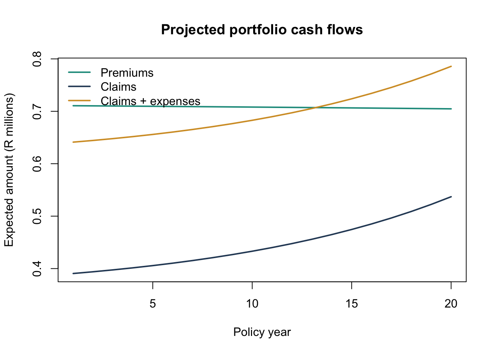
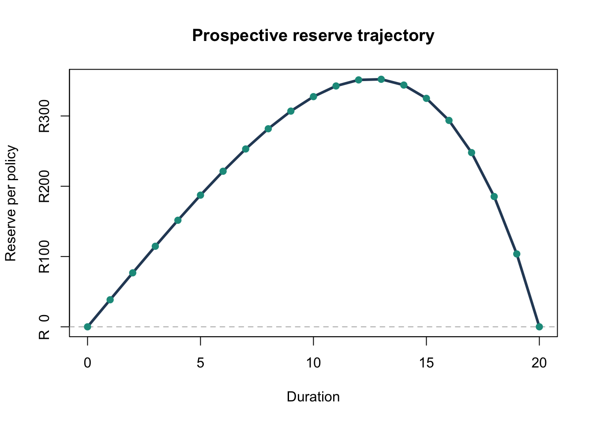

knitr::opts_chunk$set(
echo = TRUE,
warning = FALSE,
message = FALSE
)
format_currency <- function(x) {
paste0("R", format(round(x, 0), big.mark = ",", scientific = FALSE))
}
format_percent <- function(x) {
paste0(round(100 * x, 2), "%")
}
issue_age <- 40
term <- 20
sum_assured <- 1000000
initial_policies <- 1000
annual_interest <- 0.085
annual_expense <- 250
claim_expense <- 1500
expense_loading <- 0.10Life Insurance Cash Flow Projection and Reserve Sensitivity in R
Life Insurance
Actuarial Modelling
Valuation
IFRS 17
R
A reproducible R model for term assurance cash flows, level premiums, prospective reserves, and sensitivity testing under synthetic mortality assumptions.
Introduction
Life insurance valuation work is ultimately a disciplined projection exercise: future premiums, claims, expenses, and reserves are converted into present-value measures under a clearly stated basis. The modelling can be simple or highly sophisticated, but the core structure should remain auditable.
This article develops a compact R framework for a level-premium term assurance portfolio. The objective is not to reproduce a production actuarial system. Instead, the model demonstrates the mechanics behind:
- mortality-based expected claim projections;
- level premium calculation;
- prospective reserve development by policy duration; and
- sensitivity testing under alternative discount-rate and mortality bases.
The assumptions are synthetic and are included directly in the article so that the code can be rendered without external data files.
Methodology
Consider a policy issued to a life aged (x), with term (n), annual effective interest rate (i), discount factor (v=(1+i)^{-1}), and sum assured (S). Let (q_{x+t}) denote the one-year mortality rate at attained age (x+t).
The probability of surviving from issue to the start of policy year (t+1) is
\[ {}_{t}p_x = \prod_{j=0}^{t-1} (1-q_{x+j}), \qquad {}_0p_x = 1. \]
For a benefit payable at the end of the year of death, the actuarial present value of a term assurance is
\[ A^{1}_{x:\overline{n}|} = \sum_{t=0}^{n-1} v^{t+1} {}_{t}p_x q_{x+t}. \]
If premiums are payable annually in advance while the policyholder is alive, the temporary life annuity-due factor is
\[ \ddot{a}_{x:\overline{n}|} = \sum_{t=0}^{n-1} v^t {}_{t}p_x. \]
The net annual level premium is therefore
\[ P = \frac{S A^{1}_{x:\overline{n}|}} {\ddot{a}_{x:\overline{n}|}}. \]
At duration (k), immediately after the (k)-th policy anniversary, the prospective net reserve for an in-force policy is
\[ V_k = S \sum_{t=0}^{n-k-1} v^{t+1} {}_{t}p_{x+k} q_{x+k+t} - P \sum_{t=0}^{n-k-1} v^t {}_{t}p_{x+k}. \]
This reserve is a best-estimate technical measure under the selected valuation basis. In production, it would normally be extended for expenses, lapses, reinsurance, policyholder options, risk adjustment, contractual service margin, capital requirements, and governance controls.
Implementation in R
Model setup
The mortality curve below uses a Gompertz-Makeham-style force of mortality. The parameters are deliberately illustrative and are not calibrated to an official insured-life table.
make_mortality <- function(ages, mortality_factor = 1) {
makeham_term <- 0.00035
age_scale <- 0.000018
growth <- 1.085
force_of_mortality <- makeham_term + age_scale * growth^(ages - 30)
qx <- 1 - exp(-force_of_mortality * mortality_factor)
pmin(qx, 0.95)
}
survival_start <- function(qx) {
if (length(qx) == 1) {
return(1)
}
c(1, cumprod(1 - qx[-length(qx)]))
}
ages <- issue_age + seq_len(term) - 1
qx <- make_mortality(ages)
mortality_table <- data.frame(
policy_year = seq_len(term),
attained_age = ages,
qx = round(qx, 6),
deaths_per_1000 = round(1000 * qx, 3)
)
knitr::kable(head(mortality_table, 8))| policy_year | attained_age | qx | deaths_per_1000 |
|---|---|---|---|
| 1 | 40 | 0.000391 | 0.391 |
| 2 | 41 | 0.000394 | 0.394 |
| 3 | 42 | 0.000398 | 0.398 |
| 4 | 43 | 0.000402 | 0.402 |
| 5 | 44 | 0.000406 | 0.406 |
| 6 | 45 | 0.000411 | 0.411 |
| 7 | 46 | 0.000416 | 0.416 |
| 8 | 47 | 0.000422 | 0.422 |
Portfolio cash-flow projection
survival <- survival_start(qx)
inforce_start <- initial_policies * survival
expected_deaths <- inforce_start * qx
cash_flows <- data.frame(
policy_year = seq_len(term),
attained_age = ages,
inforce_start = inforce_start,
qx = qx,
expected_deaths = expected_deaths,
expected_premiums = inforce_start * gross_level_premium,
expected_claims = expected_deaths * sum_assured,
expected_maintenance_expenses = inforce_start * annual_expense,
expected_claim_expenses = expected_deaths * claim_expense
)
cash_flows$expected_outgo <- with(
cash_flows,
expected_claims + expected_maintenance_expenses + expected_claim_expenses
)
cash_flows$expected_net_cash_flow <- with(
cash_flows,
expected_premiums - expected_outgo
)
v <- 1 / (1 + annual_interest)
cash_flows$pv_expected_premiums <- cash_flows$expected_premiums *
v^(cash_flows$policy_year - 1)
cash_flows$pv_expected_outgo <- cash_flows$expected_outgo *
v^cash_flows$policy_year
cash_flows$pv_margin <- cash_flows$pv_expected_premiums -
cash_flows$pv_expected_outgo
display_cash_flows <- cash_flows
currency_columns <- c(
"expected_premiums",
"expected_claims",
"expected_outgo",
"expected_net_cash_flow"
)
display_cash_flows[currency_columns] <-
lapply(display_cash_flows[currency_columns], format_currency)
display_cash_flows$inforce_start <- round(display_cash_flows$inforce_start, 1)
display_cash_flows$qx <- round(display_cash_flows$qx, 6)
display_cash_flows$expected_deaths <- round(display_cash_flows$expected_deaths, 3)
knitr::kable(head(display_cash_flows, 8))| policy_year | attained_age | inforce_start | qx | expected_deaths | expected_premiums | expected_claims | expected_maintenance_expenses | expected_claim_expenses | expected_outgo | expected_net_cash_flow | pv_expected_premiums | pv_expected_outgo | pv_margin |
|---|---|---|---|---|---|---|---|---|---|---|---|---|---|
| 1 | 40 | 1000.0 | 0.000391 | 0.391 | R710,675 | R390,621 | 250000.0 | 585.9321 | R641,207 | R 69,468 | 710675.0 | 590974.5 | 119700.53 |
| 2 | 41 | 999.6 | 0.000394 | 0.394 | R710,397 | R393,925 | 249902.3 | 590.8881 | R644,419 | R 65,979 | 654744.2 | 547404.8 | 107339.34 |
| 3 | 42 | 999.2 | 0.000398 | 0.398 | R710,117 | R397,519 | 249803.9 | 596.2786 | R647,919 | R 62,198 | 603213.0 | 507261.2 | 95951.83 |
| 4 | 43 | 998.8 | 0.000402 | 0.401 | R709,835 | R401,427 | 249704.5 | 602.1403 | R651,733 | R 58,101 | 555735.5 | 470274.1 | 85461.40 |
| 5 | 44 | 998.4 | 0.000406 | 0.406 | R709,550 | R405,675 | 249604.1 | 608.5129 | R655,888 | R 53,662 | 511992.8 | 436195.3 | 75797.53 |
| 6 | 45 | 998.0 | 0.000411 | 0.410 | R709,261 | R410,293 | 249502.7 | 615.4396 | R660,411 | R 48,850 | 471691.0 | 404795.8 | 66895.21 |
| 7 | 46 | 997.6 | 0.000416 | 0.415 | R708,970 | R415,311 | 249400.1 | 622.9671 | R665,334 | R 43,635 | 434559.5 | 375865.0 | 58694.57 |
| 8 | 47 | 997.2 | 0.000422 | 0.421 | R708,675 | R420,764 | 249296.3 | 631.1460 | R670,691 | R 37,983 | 400349.0 | 349208.5 | 51140.44 |
plot(
cash_flows$policy_year,
cash_flows$expected_premiums / 1e6,
type = "l",
lwd = 2,
col = "#1b998b",
xlab = "Policy year",
ylab = "Expected amount (R millions)",
ylim = range(c(
cash_flows$expected_premiums,
cash_flows$expected_claims,
cash_flows$expected_outgo
)) / 1e6,
main = "Projected portfolio cash flows"
)
lines(cash_flows$policy_year, cash_flows$expected_claims / 1e6,
lwd = 2, col = "#2b4865")
lines(cash_flows$policy_year, cash_flows$expected_outgo / 1e6,
lwd = 2, col = "#d49c2f")
legend(
"topleft",
legend = c("Premiums", "Claims", "Claims + expenses"),
col = c("#1b998b", "#2b4865", "#d49c2f"),
lwd = 2,
bty = "n"
)
Prospective reserve development
prospective_reserve <- function(
issue_age,
term,
duration,
interest_rate,
sum_assured,
annual_premium,
mortality_factor = 1) {
remaining_term <- term - duration
if (remaining_term <= 0) {
return(0)
}
attained_ages <- issue_age + duration + seq_len(remaining_term) - 1
future_qx <- make_mortality(attained_ages, mortality_factor)
future_benefit_apv <- sum_assured *
term_assurance_apv(future_qx, interest_rate)
future_premium_apv <- annual_premium *
annuity_due_apv(future_qx, interest_rate)
future_benefit_apv - future_premium_apv
}
durations <- 0:term
reserve_per_policy <- vapply(
durations,
prospective_reserve,
numeric(1),
issue_age = issue_age,
term = term,
interest_rate = annual_interest,
sum_assured = sum_assured,
annual_premium = net_level_premium
)
reserve_table <- data.frame(
duration = durations,
attained_age = issue_age + durations,
reserve_per_policy = reserve_per_policy
)
reserve_display <- reserve_table
reserve_display$reserve_per_policy <-
format_currency(reserve_display$reserve_per_policy)
knitr::kable(reserve_display[seq(1, nrow(reserve_display), by = 4), ])| duration | attained_age | reserve_per_policy | |
|---|---|---|---|
| 1 | 0 | 40 | R 0 |
| 5 | 4 | 44 | R152 |
| 9 | 8 | 48 | R282 |
| 13 | 12 | 52 | R351 |
| 17 | 16 | 56 | R294 |
| 21 | 20 | 60 | R 0 |
plot(
reserve_table$duration,
reserve_table$reserve_per_policy,
type = "l",
lwd = 3,
col = "#2b4865",
xlab = "Duration",
ylab = "Reserve per policy",
main = "Prospective reserve trajectory",
yaxt = "n"
)
axis(2, at = pretty(reserve_table$reserve_per_policy),
labels = format_currency(pretty(reserve_table$reserve_per_policy)))
abline(h = 0, lty = 2, col = "grey70")
points(
reserve_table$duration,
reserve_table$reserve_per_policy,
pch = 19,
col = "#1b998b"
)
The reserve starts close to zero because the net level premium is calibrated on the same basis used for valuation. It then reflects the interaction between ageing mortality, remaining premium income, and the shortening outstanding term.
Sensitivity testing
In valuation work, the base result is rarely the full story. A useful model should help the reviewer understand how the liability behaves when the basis changes.
The table below keeps the original net premium fixed and recalculates the issue-date reserve under alternative mortality and discount-rate assumptions. Positive values indicate that the valuation basis is stronger than the pricing basis, before allowing for any explicit risk adjustment or margin.
valuation_margin <- function(discount_rate, mortality_factor) {
stressed_qx <- make_mortality(ages, mortality_factor)
stressed_benefit_apv <- sum_assured *
term_assurance_apv(stressed_qx, discount_rate)
stressed_premium_apv <- net_level_premium *
annuity_due_apv(stressed_qx, discount_rate)
stressed_benefit_apv - stressed_premium_apv
}
sensitivity <- expand.grid(
discount_rate = c(0.065, 0.085, 0.105),
mortality_factor = c(0.90, 1.00, 1.10, 1.25)
)
sensitivity$issue_date_margin <- mapply(
valuation_margin,
sensitivity$discount_rate,
sensitivity$mortality_factor
)
sensitivity_display <- sensitivity
sensitivity_display$discount_rate <-
format_percent(sensitivity_display$discount_rate)
sensitivity_display$mortality_factor <-
paste0(sensitivity_display$mortality_factor, "x")
sensitivity_display$issue_date_margin <-
format_currency(sensitivity_display$issue_date_margin)
knitr::kable(sensitivity_display)| discount_rate | mortality_factor | issue_date_margin |
|---|---|---|
| 6.5% | 0.9x | R -345 |
| 8.5% | 0.9x | R -405 |
| 10.5% | 0.9x | R -444 |
| 6.5% | 1x | R 130 |
| 8.5% | 1x | R 0 |
| 10.5% | 1x | R -95 |
| 6.5% | 1.1x | R 606 |
| 8.5% | 1.1x | R 405 |
| 10.5% | 1.1x | R 255 |
| 6.5% | 1.25x | R1,318 |
| 8.5% | 1.25x | R1,011 |
| 10.5% | 1.25x | R 778 |
Actuarial Interpretation
The model highlights several valuation principles that matter in life insurance practice:
- The premium basis and valuation basis must be separated clearly. A level premium calculated on one basis can create a liability or asset when assessed on another basis.
- Mortality, discounting, and timing conventions drive the result even in a simplified model. Small changes in assumptions can produce visible movement in the reserve profile.
- Portfolio-level cash-flow projections help connect policy-level actuarial formulae to management reporting, business planning, and capital modelling.
- A clean implementation should expose assumptions directly rather than burying them in opaque spreadsheet logic.
For an IFRS 17 or SAM context, this type of model is best viewed as a transparent analytical layer. It can support reasonableness checks, sensitivity analysis, and communication with finance or risk teams, even when the official valuation engine is more complex.
Model Limitations
This article intentionally excludes several features that would be required in a production valuation model:
- lapses, surrenders, and paid-up policy behaviour;
- acquisition expenses, commission structures, tax, and reinsurance cash flows;
- stochastic economic scenarios and yield-curve construction;
- policyholder options and guarantees;
- risk adjustment, contractual service margin, and onerous group testing under IFRS 17; and
- governance controls such as assumption versioning, reconciliations, and model change logs.
Those omissions are deliberate. The purpose of the article is to present a compact, auditable R implementation of the core mechanics before layering on product complexity.